git和github的使用
github使用教程

git 下载安装
git的使用说明
git 是分布式版本控制系统

workspace：工作区
index：暂存区
repository：仓库区（或本地仓库）
remote:远程仓库
git的使用流程
新建文件夹

打开文件夹并点击鼠标右键
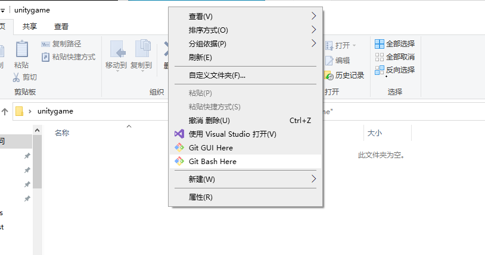初始化git仓库。（当前git bash所在目录路径为C:\Users\mjy\Desktop\unitygame）输入命令
git init
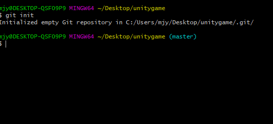安装完git后需要配置用户名和邮箱：
在第一次安装git之后需要初始github的配置信息。所以接下来要初始化你的github信息。输入命令：git config --global user.name "用户名"
然后再输入命令：git config --global user.email "邮箱"
这里说明一下，引号里输入的是你的github账号，第二个引号输入的是与你github绑定的电子邮箱。
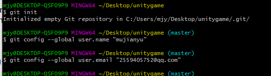克隆别人的邮箱到你的文件里
git clone [仓库地址]
本次项目的地址为https://github.com/mujianyu/untiygame.git
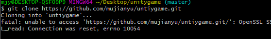
这条错误是因为网络不好
正常显示为：
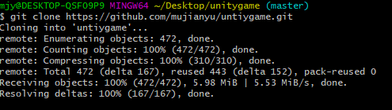查看项目修改后的状态
git status
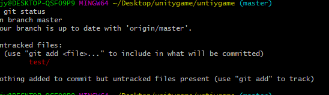提交你修改后的项目
git add -u
只提交更新的文件，不提交新加的文件git add -A
提交新加的文件和更新的文件，即所有修改的文件git add .
提交所有的文件git add 文件名
提交对应的文件
通常使用git add -A
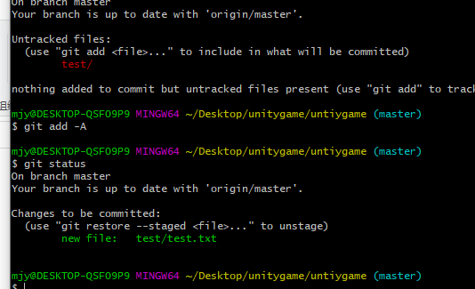git commit 命令将暂存区内容添加到本地仓库中。
提交暂存区到本地仓库中:git commit -m "xxx"
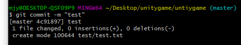git push 命用于从将本地的分支版本上传到远程并合并
git push <远程主机名> <本地分支名>git push https://github.com/mujianyu/untiygame.git master
上传文件需要仓库管理员的个人令牌，我的个人令牌一定要保存好
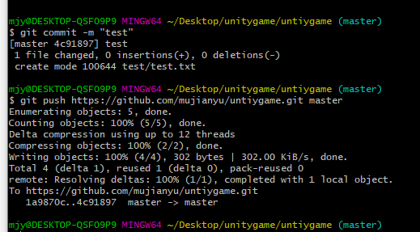
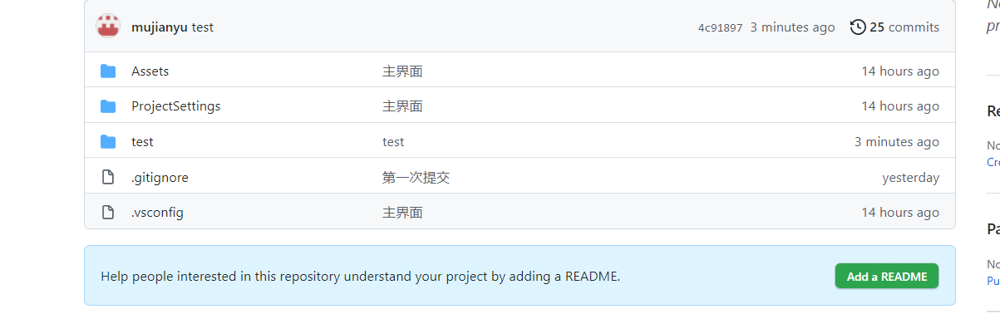一些常见的错误
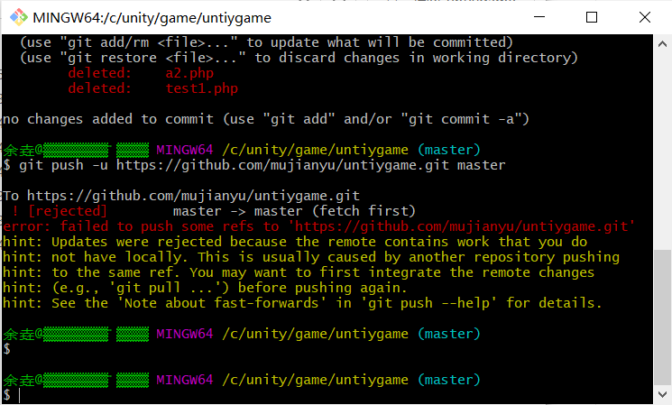
因为clone的库在远程被别人修改了所以需要更新git fetch --allgit reset --hard origin/master
注：
git fetch –all之后本地的数据都会被覆盖，新建一个branch来备份本地现有的“旧库”git branch new-branch-to-save-current-commits
如果闲麻烦可以不用git pull工作中，我们会用到git pull来从远程仓库”同步”代码，通常有三种方式；
git pull origin <remote_branch>：<local_branch>git pull origin <remote_branch>git pull
但这个好像并不会更新本地仓库